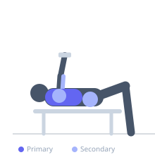
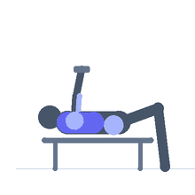

Exercise guide / Stability Ball Dumbbell Bench Press
Stability Ball Dumbbell Bench Press
A dumbbell bench press performed while lying on a stability ball instead of a bench. The unstable surface requires the core, glutes, and lower body to work significantly harder to maintain a stable pressing position, turning a chest-focused exercise into a full-body stability challenge. The ball also allows greater shoulder range of motion than a standard bench.
Primary muscles
pectoralis major sternal
pectoralis major clavicular
Secondary muscles
triceps long head
deltoid anterior
gluteus maximus
Stabilizers
transverse abdominis
internal oblique
infraspinatus
Equipment
Dumbbell (Fixed)
Swiss Ball (Stability Ball / Exercise Ball)


Starting position
- Sit on a stability ball and walk forward until the ball is under the upper back and shoulders. Feet flat on the floor, hips extended, body forming a table-top position. Hold dumbbells at chest level.
Setup
- Use a fully inflated stability ball appropriately sized for your height. Set up near a wall or rack to retrieve dumbbells safely. Keep feet wide for a more stable base.
Steps
- Step 1: Position with the ball under the upper back and shoulders, hips high, feet flat and wide. Hold dumbbells at chest level.
- Step 2: Press the dumbbells upward to full arm extension above the chest.
- Step 3: Lower the dumbbells under control back to the chest, maintaining hip height and ball position.
- Step 4: Repeat. Focus on keeping the body table-top rigid throughout.
Coaching cues
- Squeeze your glutes to keep the hips up — a sag transfers load away from the chest
- Keep feet wide and planted firmly — your base of support keeps the ball stable
Breathing
- Inhale at the bottom, exhale on the press.
Range of motion
- Full range from chest to full lockout. The ball allows the dumbbells to descend slightly past the chest level for a greater stretch.
Tempo
- 3-1-2-0
Common mistakes
- Hips dropping during the press — keep glutes contracted and hips high
- Ball positioned too far down the back — it should support the upper back/shoulders
- Using too heavy a weight, losing stability and control of the ball
Safety
- Have a spotter hand you the dumbbells once in position, or pick them up carefully by walking back along the ball
- Ensure the ball is fully inflated — a soft ball compresses unpredictably
- Use a non-slip surface under the ball
Training
- hypertrophy: 8–15 reps
- hypertrophy: 3–4 sets
- Rest: {'hypertrophy': 90}